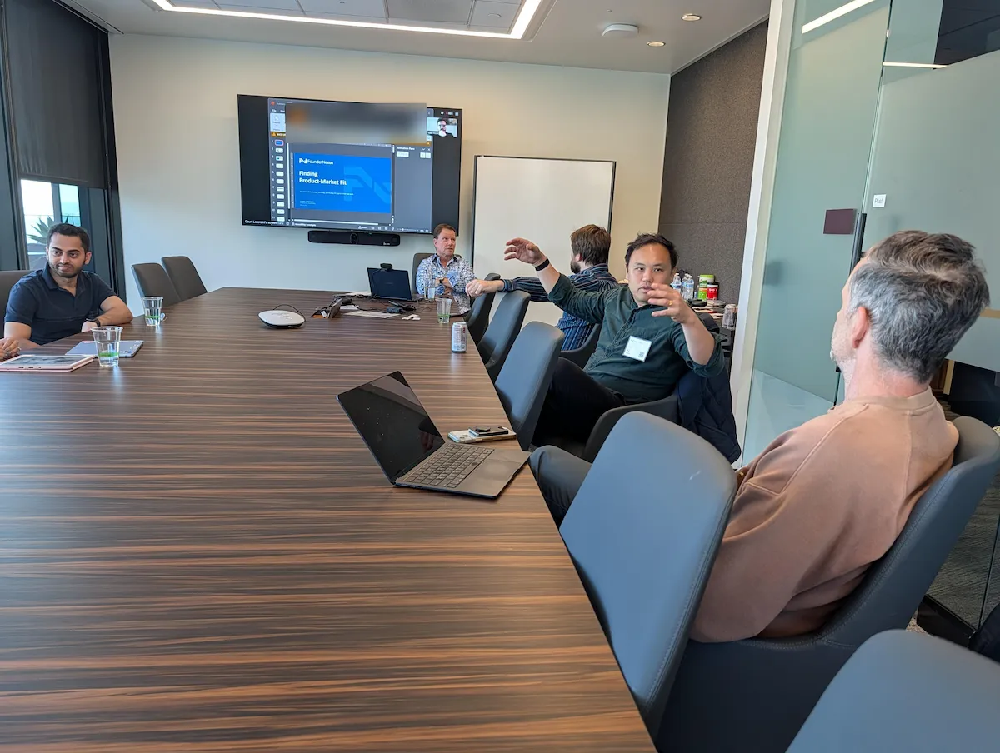

Talk through your priorities
A one-to-one conversation uncovers the challenges that matter to you and the context behind them.
For CEOs and senior executives of venture-backed companies
Your Nexus Partner helps identify your most pressing challenges and connects you with relevant peers and experienced operators to work through them.
Founder-CEOs, hired CEOs, and leaders who report directly to the CEO.

Your Nexus Partner
A stalled sales motion. A leadership hire. A board conversation you need to prepare for. Tell your Nexus Partner what you are working through. They help you find people and resources relevant to that decision.
A one-to-one conversation uncovers the challenges that matter to you and the context behind them.
Your priorities inform small sessions and introductions, matched to the topic, your responsibility, and company stage.
Your Nexus Partner follows up as your challenges change, so the support stays connected to what you need now.
Start with a session
Choose a topic relevant to a decision in front of you. You can register for an appropriate session without a Nexus Partner meeting first.
Prototype: illustrative topics below, not scheduled events. Registration previews do not submit information.
For CEOs and sales leaders working through stalled pilots, success criteria, and the path to a paid contract.
Curated session · Qualified guests
For CEOs deciding what the role needs to own, when to hire, and how to assess the experience they need.
Curated session · Qualified guests
For CEOs and finance leaders making the case for a plan when growth, runway, and expectations are pulling apart.
Curated session · Qualified guests
Open events have their own attendance criteria. Attending an open event does not establish membership eligibility.
Who membership is for
FounderNexus welcomes founder-CEOs, hired CEOs, and executives who report directly to the CEO. Your company must have raised at least $500,000 from qualified venture capital investors.
Qualified prospects can be invited to join immediately. You do not need to earn an invitation through multiple sessions.
Discuss membership ↗Peers who understand the contextSessions are curated around stage and topic, with attention to the responsibility and experience each person brings.
Support for the person doing the workA colleague can join in their own right and bring their own challenges. The CEO does not need to be the first member.
Confidential conversationsWhat you share with your Nexus Partner or in a session is not disclosed to your employer, including a CEO paying for your seat.
For your executive team
When a priority sits with your CFO, sales leader, or another direct report, they can apply to participate themselves. Each member has their own Nexus Partner conversation and relevant sessions.
The first seat is full price. Additional executive seats at the same company receive a 40% discount. Each person must meet the role requirement.
Discuss team membershipMembership
Your company stage is determined primarily by ARR, with funding as a secondary input. Your Nexus Partner can help confirm the appropriate stage.
$400/ month
Additional seat: $240 / month
$800/ month
Additional seat: $480 / month
$1,250/ month
Additional seat: $750 / month
$2,000/ month
Additional seat: $1,200 / month
Every membership includes individual Nexus Partner support and relevant peer sessions. Membership terms are confirmed before purchase.
VC FastPass
Tell us which firm connected you with FounderNexus. We will confirm your company and role and help you find a relevant first session or conversation.
Start with FastPass ↗Been here before?
If you attended before the Nexus Partner model launched in July, the experience has changed. Past attendees who meet current criteria can have a Nexus Partner conversation and one curated session, even if they previously used both guest sessions.
Reconnect with FounderNexus ↗Talk to a Nexus Partner
Tell us a little about your role and company. Start a conversation about your priorities, membership, or bringing in a colleague.
Already see a session that fits? Start there instead.
Your challenges are not reported to your employer or VC partner.